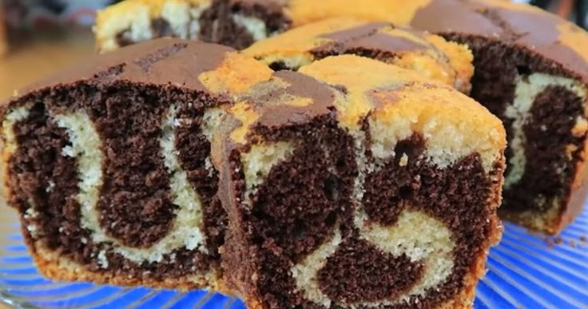

Doces · Tortas e bolos
Bolo merenda

Ingredientes
- 3/4 xícara de manteiga
- 3/4 xícara de açúcar
- 3 gemas
- 1 1/2 xícara de farinha de trigo
- 1 colher (chá) de fermento em pó
- 2 colheres (sopa) de leite
- 3 claras em neve
- Manteiga para untar
Modo de preparo
- Pré-aqueça o forno a 200 °C. Bata manteiga com açúcar e gemas até claro.
- Incorpore farinha peneirada com fermento e leite.
- Misture as claras delicadamente; asse em forma de 21 cm ~30 min.
Observação
Rendimento: 8 porções. Varie com goiabada ou gotas de chocolate.